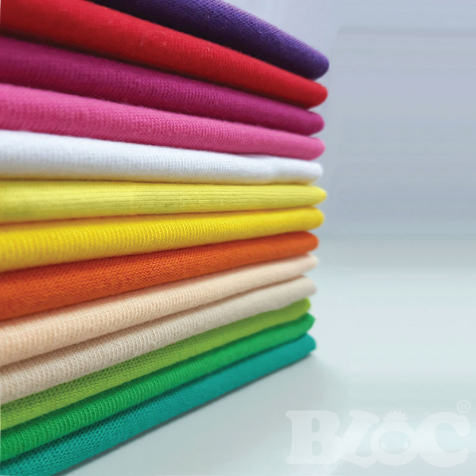
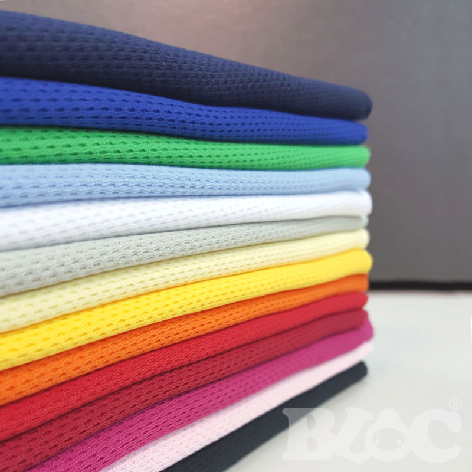
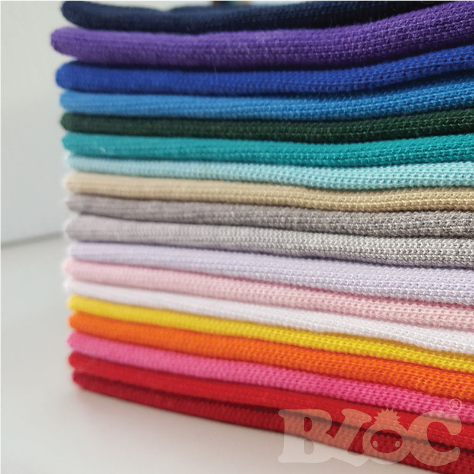
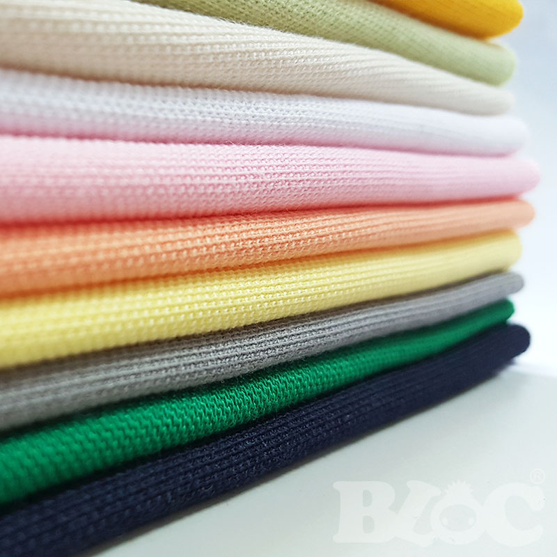

優選布料

精選 20支棉
20支平面單面布料厚度適中，是台灣T恤最常見的布料規格。 採用含棉 100% 的天然棉，幅寬70"，碼重320g， 布匹經切邊定形及防縮處理及四級反應色處理， 通風、耐洗、不變形、不起毛球.、觸感柔軟、自然的產物對人也比較健康。
| 精選 20支棉 | |
|---|---|
| 產 地 : | 台灣 |
| 成 分 : | 100%(棉)COTTON |
| 碼 重 : | 320g |
| 縮 率： | 5%內 |
| 色牢度： | 反應染四級以上 |
精選 南亞吸濕排汗布
台灣南亞公司的排汗中空纖維， 具有吸濕排汗且能保護肌膚健康的機能性 纖維材質， 布料表層採鳥眼織法，裏層加上CVC布料， 使布料與肌膚之間的觸感更佳舒適， 並且能改善單層排汗布較易勾紗的缺點。
| 精選 南亞吸濕排汗布 | |
|---|---|
| 產 地 : | 台灣 |
| 成 分 : | 100%聚酯纖維 + 35%棉 65%聚酯纖維 |
| 碼 重 : | 280g |
| 縮 率： | 5%內 |
| 色牢度： | 反應染四級以上 |


高級POLO衫材質 四角網眼
四角網眼布，內層排汗紗+表層棉織成具有高水洗， 不易皺、不易縮水(防縮處理)，布料輕薄，修飾身形的特點， 外觀以專業網狀眼孔方式編織而成，穿著舒服吸汗，透氣。
| 高級POLO衫材質 四角網眼 | |
|---|---|
| 產 地 : | 台灣 |
| 成 分 : | CVC ,65%(棉)COTTON, 35%(聚酯纖維)POLYESTER |
| 碼 重 : | 380g |
| 縮 率： | 5%內 |
| 色牢度： | 反應染四級以上 |
高級POLO衫材質 高爾布
高爾布也是排汗布的一種，織法比鳥眼還要細，質感非常輕柔， 非常適合夏天穿著，是近來非常受歡迎的布種。採用網眼織法， 具有吸濕排汗而且能保護肌膚健康的機能性纖維， 能將肌膚表層的汗水迅速吸收發散至大面積使織物快速乾燥， 並排出身體的熱氣，讓肌膚保持乾爽，質感輕、細緻、不易皺。
| 高級POLO衫材質 高爾布 | |
|---|---|
| 產 地 : | 台灣 |
| 成 分 : | T/C 35%(棉)COTTON, 65%(聚酯纖維)POLYESTER |
| 碼 重 : | 280g |
| 縮 率： | 5%內 |
| 色牢度： | 反應染四級以上 |
